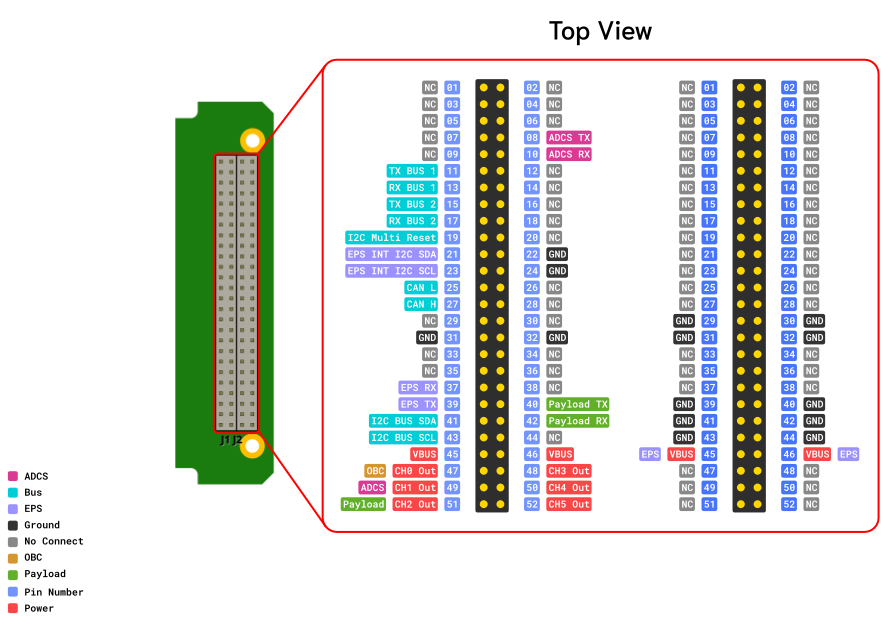

Electrical Power Subsystem
What is This?
This EPS (Electrical Power System) board is designed to manage solar power for a system. It connects solar panels, sensors, a battery, and output channels – all monitored and controlled using a simple communication protocol based on KISS (Keep It Simple, Stupid) Protocol.
Pinout Diagram

Features
- 6 Solar Cell input
- 2 channels power output (3 Outputs per channel)
- EMI Protection
- CAN, UART Comunication protocol
- PC104 form factor compatible
- Heater with automatic control (optional)
- 1S2P Lithium-ion cell
Electrical Characteristics
| Description |
Conditions |
Min |
Typical |
Max |
Unit |
|
MPPT Input |
|
|
|
|
| Input Voltage |
|
4.8 |
- |
18 |
V |
| Output Voltage |
|
- |
4.1 |
- |
V |
| Output Power |
|
- |
25 |
- |
W |
| Total Energy |
|
- |
25 |
- |
Wh |
|
Battery Pack |
|
|
|
|
| Output Voltage |
|
3 |
3.6 |
4.2 |
V |
| Output Power |
|
- |
25 |
- |
W |
|
5V Output Power (per channel) |
|
|
|
|
| Output Voltage |
|
- |
5.0 |
- |
V |
| Output Power |
|
- |
25 |
- |
W |
| Operating Temperature |
|
-20 |
- |
+60 |
⁰C |
| Storage Temperature |
|
-20 |
- |
+60 |
⁰C |
EPS Board Command Protocol – Guide
You send commands and receive data using specific formats (frames), and these commands let you:
- Read voltages and currents from solar panels and battery
- Monitor output channels
- Turn outputs ON or OFF
- Measure battery temperature
System Overview
| Component |
Description |
| Solar Panels |
6 panels, each monitored with a INA226 sensor (measures voltage & current) |
| MPPT Charger |
Takes solar power and charges the battery efficiently |
| Battery |
Charging/discharging current measured by INA226 sensors |
| Output Channels |
6 output channels with safety protections (over-voltage, over-current, short-circuit) |
| Protocol Used |
Based on KISS protocol with Start/End flags and command bytes |
| Battery Temp Sensors |
Monitors battery temperature |
Every command you send follows this pattern:
[FSTART] [CMD] [PARAM] [FEND]
| Field |
Description |
Value |
| FSTART |
Frame Start Flag |
0xC0 0x00 |
| CMD |
Command (What you want to do) |
See command table below |
| PARAM |
Extra info (like channel number or state) |
Depends on command |
| FEND |
Frame End Flag |
0xC0 |
Commands Summary
| Command Name |
CMD Value |
PARAM |
Description |
EPS_CMD_NONE |
0x00 |
- |
Do nothing (reserved) |
EPS_GET_INA226 |
0x01 |
Channel (0–7) |
Read voltage/current from INA226 sensor (Solar or Battery) |
EPS_GET_ADM1177 |
0x02 |
Channel (0–5) |
Read voltage/current from output channel |
EPS_GET_OUTPUT |
0x03 |
Channel (0–5) |
Get ON/OFF state of output channel |
EPS_GET_TEMP_BAT |
0x04 |
Channel (0-1) |
Read battery temperature sensors |
EPS_SET_OUTPUT |
0x05 |
Channel, State (0=OFF, 1=ON) |
Turn output channel ON or OFF |
EPS_SENSOR_INIT |
0xFE |
- |
Re-initialize all sensors |
EPS_GET_PARAM |
0xFF |
- |
Get configuration parameters |
Example Commands
| Action |
Full Command Frame |
| Read Solar Panel CH1 (INA226) |
C0 00 01 00 C0 |
| Turn ON Output Channel 2 |
C0 00 05 02 01 C0 |
| Read Battery Temp |
C0 00 04 00 C0 |
Tips
- All commands must start with
0xC0 0x00 and end with 0xC0
- Always double-check channel numbers when sending commands
- You can use a serial terminal or script to send frames
{kind=link}